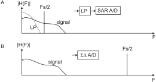

Next: Reconstruction of an analogue Up: Sampling of Analogue Signals Previous: Normalised frequency Contents
 is
and that:
is
and that:
What happens above ? Imagine 
 (11)
(11)
The ratio must be lower than to avoid ambiguity
or in other words the maximum frequency in a signal must be lower than
 . This is the Nyquist frequency.
. This is the Nyquist frequency.
If there are higher frequencies in the signal then these frequencies
are “folded down” into the frequency range of
 and creating an alias of its original frequency in the so called
“baseband” (). As long as the alias is not overlapping
with other signal components in the baseband this can be used to
downmix a signal. This leads to the general definition of the
sampling theorem which states that the bandwidth of the input signal
must be half of the sampling rate
and creating an alias of its original frequency in the so called
“baseband” (). As long as the alias is not overlapping
with other signal components in the baseband this can be used to
downmix a signal. This leads to the general definition of the
sampling theorem which states that the bandwidth of the input signal
must be half of the sampling rate  :
:
is called the Nyquist frequency.
|

|
What do we do if the signal contains frequencies above
? There are two ways to tackle this problem:
The classical way is
to use a lowpass filter (see Fig. 2A) which filters
out all frequencies above the Nyquist frequency. However this
might be difficult in applications with high resolution A/D converters.
Alternatively one can use a much higher sampling rate to avoid
aliasing. This is the idea of the sigma delta converter
which operates at sampling rates hundred times higher than the
Nyquist frequency.